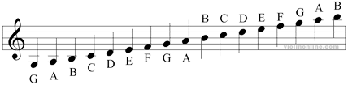
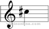
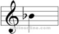
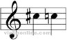
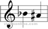
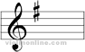
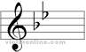
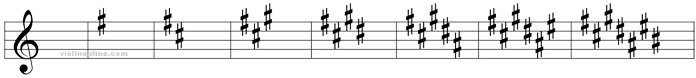
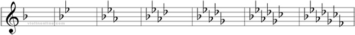

A, B, C, D, |
Seven letters of the alphabet are used to name notes in music. |
Staff |
Musical notes are written on and between five parallel lines called a staff. |
Treble Clef |
The Treble clef or G clef is used for violin music. It also is used by the viola and cello when the notes are in a higher range than the tenor and bass clefs. |
Alto Clef |
The Alto clef is the most frequently used clef in viola music. Notice how the clef curves in the middle to point to the note middle C. |
Bass Clef |
The Bass clef (or F clef) is the most frequently used clef in cello music. The two dots surround the line F. |
Tenor Clef |
The Tenor clef is used for cello music with notes in a range higher than notes found in the bass clef. The middle pointer of this clef points to middle C (the second line from the top of the staff). |
Notes on the lines: |
Memory tip for notes written on the lines: use each note as the first letter of the words in the sentence: Every Good Boy Does Fine. |
Notes in the spaces: |
Memory tip for notes written in the spaces: these letters spell the word: F A C E. |
| Notes which extend above and below the staff are written on ledger lines & spaces. | |
Notes above the staff: |
Notes below the staff: |
| Consecutive letter names of notes using the Treble clef:  |
|
For more help with violin notes, visit our Violin Fingering Chart
 |
Staffs are divided by bars into measures. |
 |
A thick double bar is a final ending and indicates the end of a section of music. |
Time Signature |
The top number in a time signature shows the number of beats that are in each measure. The bottom number shows what type of note gets each beat. For example, a time signature of 3/4 indicates each measure contains three quarter notes. |
 |
A double bar with two dots is a repeat marking, and indicates the music in between the repeat signs should be repeated. |
 |
If there is only one repeat sign with the dots facing to the left, go back to the beginning and play the entire section of music again. |
 |
First and second endings should be played as follows: play the first ending the first time through the music, repeat to the beginning of the section, then skip over the first ending and play the second ending. |
| D.C. al Fine | D.C. al Fine means go back to the beginning, and end at the Fine marking. (D.C. is an abbreviation for “da capo”, and means “from the beginning” and Fine means "end"). |
| D.C. al Coda | D.C. al Coda means go back to the beginning of the piece, play to the “Coda” sign:  , then jump to the Coda section to finish the piece. , then jump to the Coda section to finish the piece. |
| D.S. al Fine | D.S. al Fine means go back to the sign,  and end at the Fine marking (D.S. is an abbreviation for “dal segno”, and means “the sign”). and end at the Fine marking (D.S. is an abbreviation for “dal segno”, and means “the sign”). |
| Sharp |
 | A sharp set before a note raises the pitch of the note a half-step, and remains in effect for the rest of the measure. |
| Flat |
 | A flat set before a note lowers the pitch of the note a half-step, and remains in effect for the rest of the measure. |
| Natural |
 | A natural set before a note restores the natural pitch of a note, and is often used after a flat or sharp. |
| Enharmonic Notes |
 | Enharmonic notes are two notes that sound the same, but are spelled differently (e.g. A# and Bb). |
|  | Sharps or flats placed at the beginning of each staff are called key signatures. This key signature with an F# indicates that all F notes in this piece should be played as F#. |
|  |
This key signature with a B and E flat indicates that all B's and E's should be played as B flat and E flat. |
| C Major | G Major | D Major | A Major | E Major | B Major | F# Major | C# Major |
|  | |||||||
| a minor | e minor | b minor | f# minor | c# minor | g# minor | d# minor | a# minor |
| F Major | Bb Major | Eb Major | Ab Major | Db Major | Gb Major | Cb Major |
|  | ||||||
| d minor | g minor | c minor | f minor | Bb minor | Eb minor | Ab minor |